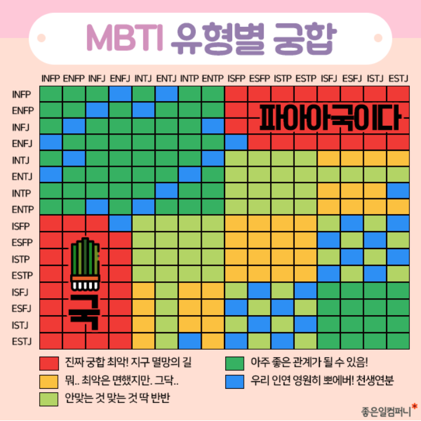

| 혜린's MBTI |
| ENTP |
|
변론가(ENTP)는 두뇌 회전이 빠르고 대담한 성격으로 현재 상황에 이의를 제기하는 데 거리낌이 없습니다.
변론가는 어떤 의견이나 사람에 반대하는 일을 두려워하지 않으며, 논란이 될 만한 주제에 대해 격렬하게 논쟁하는 일을 즐깁니다. 그렇다고 변론가가 반론을 제기하는 데만 관심이 있거나 악의를 지닌 것은 아닙니다. 사실 변론가는 지식이 풍부하고 호기심이 넘치며 활기찬 유머 감각으로 다른 사람을 즐겁게 할 수 있는 성격입니다. 다만 대부분의 성격과 달리 논쟁에서 즐거움을 찾는 성향이 있을 뿐입니다. |
| ENTP와 궁합을 알아보자 |
|  |
| 나는 무엇인지 궁금하다면? |
검사하러 가기 ☞ |